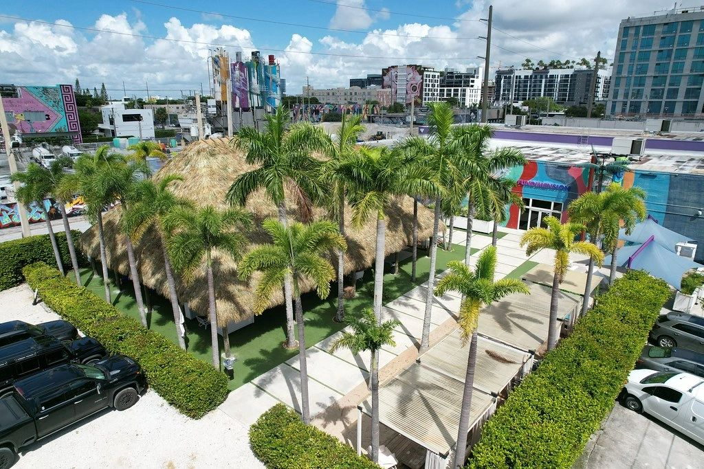

Ceremonia en el Jardín y recepción bajo la palapa, o al revés. El recinto admite hasta ~300 sentados y ~600 de pie, y los ~4 000 ft² techados son el plan de lluvia sin cambiar de sede.Ceremony in the Garden and reception under the structure, or the other way round. The site takes up to ~300 seated and ~600 standing, and the ~4 000 sq ft under roof are the rain plan without changing venue.

El Jardín y el Tiki Hut son contiguos y comparten el paseo. Eso permite separar ceremonia, cóctel y baile sin que los invitados salgan del recinto ni haya traslado.The Garden and the Tiki Hut are contiguous and share the walk. That lets you separate ceremony, cocktail hour and dancing without guests leaving the site and without transfers.
No imponemos catering ni decoración. Trabajas con tu wedding planner y tus proveedores; nosotros entregamos el espacio. Ocho cabañas amuebladas y las mesas de picnic ya están en el jardín.We do not impose catering or decor. You work with your wedding planner and your vendors; we hand over the space. Eight furnished cabanas and the picnic tables are already in the garden.
2129 NW 1st Ct, a cuatro minutos a pie de Wynwood Walls. Las palmeras, la paja y los murales del barrio son el fondo real de las fotos, no un set.2129 NW 1st Ct, a four-minute walk from Wynwood Walls. The palms, the thatch and the neighbourhood murals are the real backdrop of the photographs, not a set.
Cuéntanos qué evento tienes y respondemos con disponibilidad, condiciones y la ficha técnica completa.Tell us about your event and we'll come back with availability, terms and the full spec sheet.